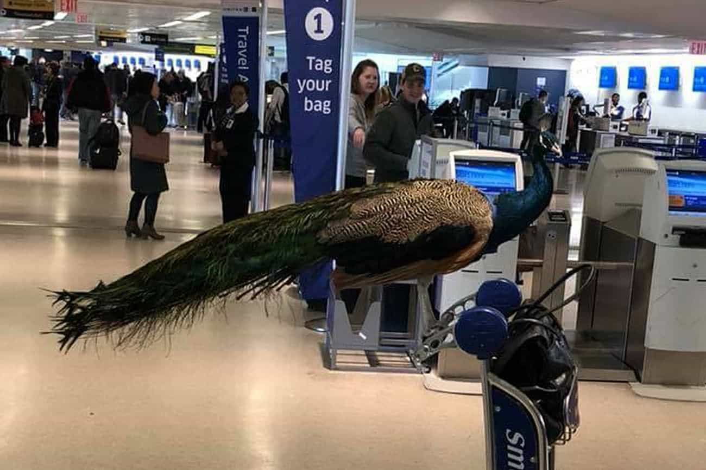

We’ve heard of women hamstering before, but one American woman has hamstered about murdering her “emotional support” hamster. Swift Airlines wouldn’t let her take it onboard a plane, so she elected to drown the hamster by flushing it down a toilet in Baltimore. Instead of taking responsibility for her actions, Belen Aldecosea has decided to sue Swift for “emotional distress” and try to become famous.
The 21-year-old is claiming she had no choice but to murder her hamster before a flight to Florida, particularly as she alleges that a Swift employee recommended she kill the rodent named Pebbles. ROK is awaiting confirmation as to whether Belen Aldecosea would jump off the Brooklyn Bridge if a Swift employee told her to.
One positive from this bizarre story is that Aldecosea’s female privilege, which would normally spare her from the public ridicule she deserves, is yet to kick in and probably won’t. PETA is currently up her ass like men up a Brazilian porn star. That said, her vagina will probably come in handy when white knight prosecutors almost certainly decline to file charges of animal cruelty against her.
Whilst Swift Airlines has admitted that it gave incorrect initial information to Aldecosea about being able to take Pebbles with her, this is beside the point. If an organization provides me with false assurances that I can take my pet somewhere, I don’t decide to murder it when I cannot bring it with me.
How could she possibly fly without her “emotional support” hamster?

An “emotional support” peacock.
Underscoring the stupidity and attention-seeking of Aldecosea is the fact that, in the end, she managed to later fly without her emotional support hamster. Unlike someone with a legitimate need for an assistance animal, like a blind person, she appears to be all about the attention and feelz. Moreover, even for a mollycoddled young woman unused to personal responsibility, her decision to subsequently go public with talk of legal action is painfully autist.
There is a broader issue at play, especially if we momentarily forget the murder of Pebbles. Very recently, some sort of female artist unsuccessfully sought to bring her “emotional support” peacock onto a flight. Thankfully, she didn’t murder Dexter the bird afterwards. Part of the problem with situations like these is that well-intentioned legislation to prevent discrimination against, say, blind people has been co-opted by social loonies and the mentally ill to try and get animals more associated with Noah’s Ark than aviation onto aeroplanes. I don’t know the specifics of each jurisdiction, yet it is very frequently illegal for airline staff to ask for documentation about purported “service animals.”
People like Aldecosea and many others reliant on “emotional support animals” are a risk to aviation safety
What comes first, the safety of hundreds of people on a plane or the dubious need for an “emotional support” animal?
I can appreciate, in limited circumstances, that someone with, for example, autism requires an emotional support dog. Of course, I can definitely understand a blind person bringing their guide dog onboard. But serious questions need to be asked about the mental stability of many people demanding that their “emotional support” peacocks, hamsters, and armadillos come onto aircraft with them.
In addition to the risks the animals themselves pose (and the mess when they use the floor or a seat as a toilet), something as minor as run-of-the-mill air turbulence could potentially trigger the unbalanced passengers (medically or otherwise) using these animals. Whatever sympathy you may have for their mental and psychological illnesses, they are undoubtedly volatile individuals, people who in many cases are going to be risks to flights.
This is an extreme case, but it’s emblematic of pampered females around the world
We should be happy that pet-murdering women like this bint Belen Aldecosea aren’t so numerous in the world. But let’s not kid ourselves and think her behavior is not significantly influenced by a social environment that teaches women they are never fully responsible for what they do. Only a minority of girls will blame an airline for them murdering an animal, though plenty of others will blame their husband when they cheat on him, condone criminal offending by saying they are victims of “abuse,” and concoct a myriad of other excuses to explain away their antics.
Belen Aldecosea’s principal mistake was that she underestimated society’s continuing disdain for the torture and killing of animals. It is unsurprising, however, that at least some girls in her position want to get a payday from their own psychopathy, screaming “emotional distress” and bellowing for a six or seven-figure settlement with a corporation. It works for women who engage in consensual workplace sexual relations and then maintain they were sexually assaulted, so Aldecosea might be forgiven for thinking it can work for her, too. Knowing the US system of civil litigation, a non-remote chance remains that she’ll eventually be compensated for her terrible cruelty towards an animal.
Read More: China Has The World’s Largest Rationalization Hamster